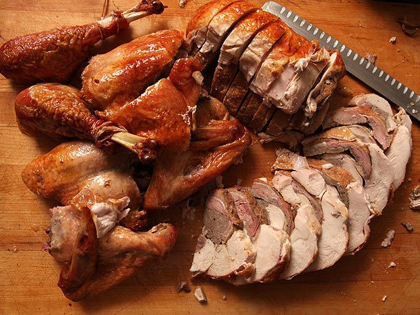

Home
Turducken

Description
Turducken brings three birds into one dish, turkey, duck, and chicken.
Ingredients
- Kosher salt and freshly ground black pepper
- 1 small chicken (3 1/2 to 4 pounds pre-boning
- 2 pounds raw bulk sausage meat
- 1 duck (4 to 4 /12 pounds pre-boning
- 3 tablespoons vegetable oil
- 1 turkey (10 to 13 pounds), carcass removed, leg and wing bones left intact
Steps
- Season chicken evenly on all sides with salt and pepper. Lay chicken flat, skin side down, on cutting board.
Shape 12 ounces of sausage into a log roughly 2 inches in diameter and place in the center of
the chicken. Lift one side of chicken and wrap tightly around sausage.
Lift the other side, allowing the skin from both sides to overlap and form a seal.
The chicken should now be wrapped around the sausage. Wrap tightly in several layers of plastic wrap so that
chicken forms a tight cylinder (see note). Alternatively, chicken can be tightly trussed with butcher's twine.
- Place chicken inside a vacuum sealer bag and seal. Place in a large stockpot and cover with warm water.
Place over medium-high heat and heat until bubbles just begin to rise from the bottom. Reduce heat to lowest
setting and cook until chicken feels firm to the touch and an instant read thermometer inserted through the
plastic into the center of the chicken registers 140 to 145°F, about 45 minutes.
-
While chicken is cooking, season the duck on all sides with salt and pepper. Place a 36- by 12-inch piece of
plastic wrap on the cutting board. Lay duck flat, skin side down, on plastic wrap. Spread remaining sausage
evenly over surface of meat. When chicken is cooked, remove from bag and plastic wrap and carefully pat dry
with paper towels. Place hot chicken directly on top of duck, aligned along the center. Using the plastic wrap
to aid you, carefully shape the duck around the chicken. Roll into a tight cylinder in several layers of plastic
wrap. Alternatively, duck can be tightly trussed with butcher's twine.
-
Place chicken/duck inside a vacuum sealer bag and seal. Place in a large stockpot and cover with warm water. Place
over medium-high heat and heat until bubbles just begin to rise from the bottom. Reduce heat to lowest setting and
cook until Duck feels firm to the touch, about 30 minutes.
-
Remove duck from water. If you used a vacuum bag or plastic wrap, remove both, then tightly truss the duck with twine.
Dry exterior thoroughly with paper towels.
-
Heat 2 tablespoons oil in a large skillet over medium-high heat until shimmering. Add duck/chicken and cook, turning
occasionally, until well browned and crisp on all sides, pouring off excess rendered fat as necessary (you can reserve
this fat for another use), about 15 minutes total.
-
Adjust oven rack to lowest position and preheat oven to 425°F. Place turkey skin-side-down on a cutting board and season
exposed surface with salt and pepper. Remove twine from duck/chicken and place in the center of the turkey, aligned along
the center. If necessary, trim duck/chicken roll so that is is the same length as the turkey breasts. (You can serve the
excess duck/turkey as well).
-
Carefully lift one side of the turkey to cover the duck/chicken, then lift the other side, letting the skin overlap by at
least 1 inch. Use metal or wooden skewers to secure the skin in 5 to 8 locations. Carefully transfer turkey to a V- or U-rack
set in a roasting pan, seam-side down.
-
Carefully lift one side of the turkey to cover the duck/chicken, then lift the other side, letting the skin overlap by at least
1 inch. Use metal or wooden skewers to secure the skin in 5 to 8 locations. Carefully transfer turkey to a V- or U-rack set in a
roasting pan, seam-side down.
-
With the turkey's legs facing you, place a long piece of butcher's twine behind the breasts, tucking it into the wing joints. Pull
it around the breast along its base to the bottom of the breast, then allow the ends to cross over. Wrap each end around the end of
the drumstick, and pull them tightly together. Loop the ends of the twine around both drumsticks a few times to secure, then tie a
knot and trim the excess. Rub remaining oil all over turkey and season with salt and pepper. Transfer to oven and roast until golden
brown, turkey breast meat registers at least 150°F on an instant read thermometer, and thighs registers at least 165°F, about 1 1/2 hours.
-
Transfer to cutting board, carefully remove skewers, and allow to rest for 20 minutes. To carve, remove legs and wings. Split breast in half
lengthwise down the center to create two boneless halves. Slice crosswise into serving slices.